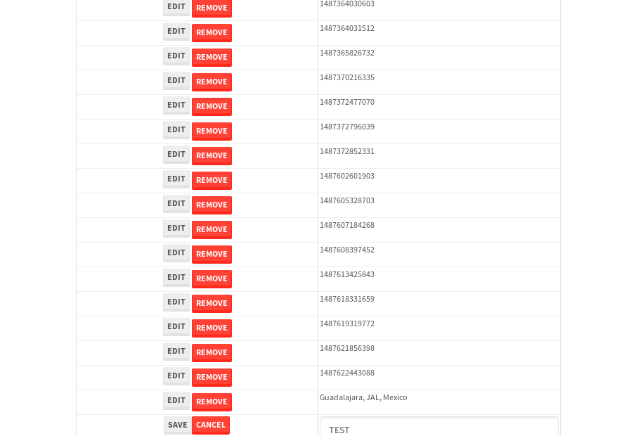

tbColumn.Grid Sorting - 38.413sTests: 5Skipped: 0Failures: 0 should sort data in ascending order then on descending order when sorting by Order Id column - 10.235sTests passed: 100.00%should order data in ascending order when click-sorting an unsorted text column - 5.967sTests passed: 100.00%should order data in descending order when click-sorting an ascending-sorted text column - 7.397sTests passed: 100.00%should order data in ascending order when click-sorting an unsorted date column - 7.622sTests passed: 100.00%should order data in descending order when click-sorting twice an unsorted date column - 7.19sTests passed: 100.00%
tbSingleForm.Form validations - 3.397sTests: 2Skipped: 0Failures: 0 should have an empty required field - 1.665sTests passed: 100.00%should not be able to click on save - 1.731sTests passed: 100.00%
Tubular Filters.tbColumnFilter - 131.142sTests: 12Skipped: 0Failures: 0 should cancel filtering when clicking outside filter-popover - 12.474sTests passed: 100.00%should disable Value text-input for "None" filter - 8.106sTests passed: 100.00%should disable apply button for "None" filter - 7.633sTests passed: 100.00%should decorate popover button when showing data is being filtered for its column - 14.086sTests passed: 100.00%should correctly filter data for the "Equals" filtering option - 11.485sTests passed: 100.00%should correctly filter data for the "Not Equals" filtering option - 11.26sTests passed: 100.00%should correctly filter data for the "Contains" filtering option - 9.487sTests passed: 100.00%should correctly filter data for the "Not Contains" filtering option - 11.082sTests passed: 100.00%should correctly filter data for the "Starts With" filtering option - 8.887sTests passed: 100.00%should correctly filter data for the "Not Starts With" filtering option - 8.208sTests passed: 100.00%should correctly filter data for the "Ends With" filtering option - 8.499sTests passed: 100.00%should correctly filter data for the "Not Ends With" filtering option - 8.243sTests passed: 100.00%
Tubular Filters.tbColumnDateTimeFilter - 151.621sTests: 12Skipped: 0Failures: 0 should cancel filtering when clicking outside filter-popover - 9.506sTests passed: 100.00%should disable Value text-input for "None" filter - 6.751sTests passed: 100.00%should disable apply button for "None" filter - 7.134sTests passed: 100.00%should clear filtering when clicking on Clean button - 19.552sTests passed: 100.00%should decorate popover button when showing data is being filtered for its column - 13.543sTests passed: 100.00%should correctly filter data for the "Equals" filtering option - 8.883sTests passed: 100.00%should correctly filter data for the "Not Equals" filtering option - 10.32sTests passed: 100.00%should correctly filter data for the "Between" filtering option - 12.691sTests passed: 100.00%should correctly filter data for the "Greater-or-equal" filtering option - 12.72sTests passed: 100.00%should corretlly filter data for the "Greater" filtering option - 12.261sTests passed: 100.00%should correctly filter data for the "Less-or-equal" filtering option - 13.289sTests passed: 100.00%should correctly filter data for the "Less" filtering option - 13.387sTests passed: 100.00%
Tubular Filters.tbColumnOptionsFilter - 88.138sTests: 3Skipped: 0Failures: 0 should cancel filtering when clicking outside filter-popover - 11.293sTests passed: 100.00%should decorate popover button when showing data is being filtered for its column - 12.49sTests passed: 100.00%should filter column-elements in accordance to the selected filter when selecting a single option - 52.741sTests passed: 100.00%
Tubular Filters.tbTextSearch - 58.081sTests: 5Skipped: 0Failures: 0 min-chars is not set - 1.902sTests passed: 100.00%should filter data in searchable-column customer name to matching inputted text, starting from 3 characters - 9.414sTests passed: 100.00%should filter data in searchable-column shipper city to matching inputted text, starting from 3 characters - 13.06sTests passed: 100.00%should show clear button when there is inputted text only - 9.291sTests passed: 100.00%should clear filtering when clicking clear button - 18.959sTests passed: 100.00%
tbForm related components.tbCheckboxField - 11.637sTests: 2Skipped: 0Failures: 0 should save changes on "SAVE" - 5.145sTests passed: 100.00%should discard changes on "CANCEL" - 4.475sTests passed: 100.00%
tbForm related components.tbDropDownEditor - 20.143sTests: 5Skipped: 0Failures: 0 should set initial input value to the value of "value" attribute when defined - 3.61sTests passed: 100.00%should show the component name value in a label field when "showLabel" attribute is true - 2.472sTests passed: 100.00%should show a help field equal to this attribute, is present - 2.573sTests passed: 100.00%should submit modifications to item/server when clicking form "Save" - 5.77sTests passed: 100.00%should NOT submit modifications to item/server when clicking form "Cancel" - 4.523sTests passed: 100.00%
tbForm related components.tbTextArea - 34.072sTests: 7Skipped: 0Failures: 0 should set initial input value to the value of "value" attribute when defined - 2.568sTests passed: 100.00%should be invalidated when the number of chars is not in the range of "min" and "max" attributes - 9.266sTests passed: 100.00%should show the component name value in a label field when "showLabel" attribute is true - 2.642sTests passed: 100.00%should show a help field equal to this attribute, is present - 2.277sTests passed: 100.00%should require the field when the attribute "required" is true - 6.421sTests passed: 100.00%should submit modifications to item/server when clicking form "Save" - 5.127sTests passed: 100.00%should NOT submit modifications to item/server when clicking form "Cancel" - 4.054sTests passed: 100.00%
tbForm related components.tbDateEditor - 50.744sTests: 6Skipped: 0Failures: 2 should set initial date value to the value of "value" attribute when defined - 5.356sExpected false to be true.✗Tests passed: 0.00%should be invalidated when the date is not in the range of "min" and "max" attributes - 7.527sTests passed: 100.00%should show the component name value in a label field when "showLabel" attribute is true - 10.566sTests passed: 100.00%should show a help field equal to this attribute, is present - 5.747sTests passed: 100.00%should submit modifications to item/server when clicking form "Save" - 7.412sTests passed: 100.00%should NOT submit modifications to item/server when clicking form "Cancel" - 6.71sExpected false to be true.✗Tests passed: 0.00%
tbForm related components.tbTypeaheadEditor - 28.874sTests: 7Skipped: 0Failures: 0 should show an options list when there is an API-info/component entered-data - 2.824sTests passed: 100.00%should select the option clicked - 3.495sTests passed: 100.00%should show a "delete" button when an option/match is selected, and delete the option if button is clicked - 3.359sTests passed: 100.00%should show a label value equal to the component name when "showLabel" attribue is true - 3.129sTests passed: 100.00%should require a value when "require" attribute is true - 3.003sTests passed: 100.00%should submit modifications to item/server when clicking form "Save" - 8.263sTests passed: 100.00%should NOT submit modifications to item/server when clicking form "Cancel" - 3.805sTests passed: 100.00%
tbForm related components.tbSimpleEditor - 41.779sTests: 9Skipped: 0Failures: 0 should set initial input value to the value of "value" attribute when defined - 4.033sTests passed: 100.00%should be invalidated when the number of chars is not in the range of "min" and "max" attributes - 3.401sTests passed: 100.00%should show the component name value in a label field when "showLabel" attribute is true - 3.128sTests passed: 100.00%should set input placeholder to the value of "placeholder" attribute - 4.911sTests passed: 100.00%should validate the control using the "regex" attribute, if present - 8.506sTests passed: 100.00%should show a help field equal to this attribute, is present - 3.898sTests passed: 100.00%should require the field when the attribute "required" is true - 2.597sTests passed: 100.00%should submit modifications to item/server when clicking form "Save" - 5.105sTests passed: 100.00%should NOT submit modifications to item/server when clicking form "Cancel" - 5.251sTests passed: 100.00%
tbForm related components.tbNumericEditor - 29.422sTests: 7Skipped: 0Failures: 0 should set initial component value to the value of "value" attribute when defined - 3.116sTests passed: 100.00%should be invalidated when the entered number is not in the range of "min" and "max" attributes - 4.56sTests passed: 100.00%should show the component name value in a label field when "showLabel" attribute is true - 3.109sTests passed: 100.00%should show a help field equal to this attribute, is present - 2.946sTests passed: 100.00%should require the field when the attribute "required" is true - 3.639sTests passed: 100.00%should submit modifications to item/server when clicking form "Save" - 5.443sTests passed: 100.00%should NOT submit modifications to item/server when clicking form "Cancel" - 5.196sTests passed: 100.00%
tbForm Connection Error NoModelKey - 2.904sTests: 1Skipped: 0Failures: 0 tbForm connection error functionality - 0.544sTests passed: 100.00%
tbForm Connection Error NoServerUrl - 3.026sTests: 1Skipped: 0Failures: 0 tbForm connection error functionality - 0.613sTests passed: 100.00%
tbGridComponents - 39.628sTests: 6Skipped: 0Failures: 4 should add item with newRow method - 6.49sExpected 'EDIT REMOVE TEST' not to be 'EDIT REMOVE TEST'.✗Tests passed: 50.00%should add item with newRow method and cancel action - 1.662sTests passed: 100.00%should update item with tbSaveButton - 4.568sExpected '' to be 'TEST'.✗Tests passed: 0.00%should NOT update item on cancel Update action - 1.611sFailed: ElementNotVisibleError✗Tests passed: 0.00%should remove item with tbRemoveButton - 22.212sExpected 65 not to be 65, 'should remove the row from the table'.✗Tests passed: 50.00%should NOT remove item on cancel Remove action - 1.465sTests passed: 100.00%
tbGridPager.navigation buttons - 16.483sTests: 1Skipped: 0Failures: 0 should perform no action when clicking on the numbered navigation button corresponding to the current-showing results page - 2.391sTests passed: 100.00%
tbGridPager.navigation buttons.first/non-last results page related functionallity - 7.548sTests: 2Skipped: 0Failures: 0 should disable "first" and "previous" navigation buttons when in first results page - 3.027sTests passed: 100.00%should enable "last" and "next" navigation buttons when in a results page other than last - 4.521sTests passed: 100.00%
tbGridPager.navigation buttons.last/non-first results page related functionallity - 6.544sTests: 2Skipped: 0Failures: 0 should disable "last" and "next" navigation buttons when in last results page - 2.678sTests passed: 100.00%should enable "first" and "previous" navigation buttons when in a results page other than first - 3.866sTests passed: 100.00%
tbGridPager.page navigation - 12.964sTests: 5Skipped: 0Failures: 0 should go to next results page when clicking on next navigation button - 2.72sTests passed: 100.00%should go to previous results page when clicking on previous navigation button - 3.677sTests passed: 100.00%should go to last results page when clicking on last navigation button - 2.262sTests passed: 100.00%should go to first results page when clicking on first navigation button - 2.144sTests passed: 100.00%should go to corresponding results page when clicking on a numbered navigation button - 2.161sTests passed: 100.00%
tbGridPagerInfo - 8.352sTests: 2Skipped: 0Failures: 0 should show text in accordance to numbered of filter rows and current results-page - 2.472sTests passed: 100.00%should show count in footer - 0.917sTests passed: 100.00%
tbHttp - 21.309sTests: 8Skipped: 1Failures: 0 should be authenticated - 3.689sTests passed: 100.00%retrieve data - 3.874sTests passed: 100.00%should not login bad credentials - 2.68sTests passed: 100.00%should have a refresh token - 2.361sTests passed: 100.00%should remove authentication - 2.401sTests passed: 100.00%get method-Is not authenticated - 3.424sTests passed: 100.00%post method-Is not authenticated - 2.88sTests passed: 100.00%should regenerate access token on post - 0s***Skipped***Tests passed: 0%
tbPageSizeSelctor - 15.919sTests: 4Skipped: 0Failures: 0 should filter up to 10 data rows per page when selecting a page size of "10" - 3.552sTests passed: 100.00%should filter up to 20 data rows per page when selecting a page size of "20" - 2.405sTests passed: 100.00%should filter up to 50 data rows per page when selecting a page size of "50" - 4.329sTests passed: 100.00%should filter up to 100 data rows per page when selecting a page size of "100" - 4.001sTests passed: 100.00%
tbRowSelectable - 15.048sTests: 2Skipped: 0Failures: 0 selected rows - 8.635sTests passed: 100.00%unselected rows - 4.034sTests passed: 100.00%
tbSingleForm - 27.218sTests: 8Skipped: 0Failures: 1 should load correct info - 3.216sTests passed: 100.00%should change customer name - 3.661sTests passed: 100.00%should save it - 5.242sFailed: Element is not enabled✗Tests passed: 0.00%should clear the inputs - 2.926sTests passed: 100.00%should update - 3.542sTests passed: 100.00%should reset editor - 2.489sTests passed: 100.00%should not save if not Changes - 3.093sTests passed: 100.00%should not be able to click on save - 3.049sTests passed: 100.00%


{kind=link}